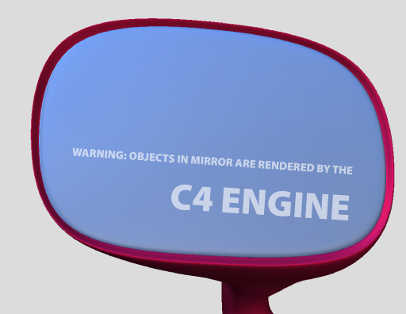

well good luck to the winner hoever it is some look pretty good
C4 Engine logo contest
99 posts
• Page 4 of 4 • 1, 2, 3, 4
 by semajhs » 09 Jun 2006, 21:43
by semajhs » 09 Jun 2006, 21:43
Well I just realized this, so I cant make multiple's of these, so if chosen you can tell me how you want it rendered, or colored etc.
but this is the idea (too bad I didnt realize this till the day its due!)
URL=http://imageshack.us] [/URL]
[/URL]
but this is the idea (too bad I didnt realize this till the day its due!)
URL=http://imageshack.us]
[/URL]- semajhs
- Experienced User

- Posts: 77
- Joined: 09 Jun 2006, 21:42
 by Eric Lengyel » 09 Jun 2006, 22:06
by Eric Lengyel » 09 Jun 2006, 22:06
Four hours remaining!
We've had a couple requests to allow logos to be submitted later than tonight's deadline. We cannot allow this for the contest because it wouldn't be fair to anyone who got their logo in on time.
We've had a couple requests to allow logos to be submitted later than tonight's deadline. We cannot allow this for the contest because it wouldn't be fair to anyone who got their logo in on time.
-

Eric Lengyel - Terathon Employee

- Posts: 19108
- Joined: 09 May 2005, 19:00
- Location: Roseville, CA
 by ordaz » 09 Jun 2006, 22:52
by ordaz » 09 Jun 2006, 22:52
Eric Lengyel wrote:We've had a couple requests to allow logos to be submitted later than tonight's deadline. We cannot allow this for the contest because it wouldn't be fair to anyone who got their logo in on time.
I *wish* I had more time, but I wouldn't *ask* for it...
It's 5:52 (a.m.) here, coffee break for me


Well, I think that's about it. Sending e-mail now...
EDIT: E-mail sent; I hope bothhave arrived (I sent the first one from another account...). Well, folks, time to get back to the code!
EDIT2: OK, I'm leaving... Just thinking... would this one be better this way?

Last edited by ordaz on 09 Jun 2006, 23:12, edited 2 times in total.
-

ordaz - Experienced User
- Posts: 95
- Joined: 23 May 2006, 19:12
- Location: Salamanca/Madrid, Spain
Rear View mirror warning
 by David Vasquez » 10 Jun 2006, 01:59
by David Vasquez » 10 Jun 2006, 01:59

This is a play on the "objects are larger than they appear" warning on rear view mirrors.
-

David Vasquez - Community Leader
- Posts: 4096
- Joined: 17 Apr 2006, 19:00
- Location: Las Vegas, Nevada
 by Eric Lengyel » 10 Jun 2006, 02:05
by Eric Lengyel » 10 Jun 2006, 02:05
The deadline is here! If you haven't already emailed your submission, now is the time.
The submissions will be displayed on a separate web page later tonight (anonymously).
The submissions will be displayed on a separate web page later tonight (anonymously).
-
Eric Lengyel - Terathon Employee
- Posts: 19108
- Joined: 09 May 2005, 19:00
- Location: Roseville, CA

 by seryu » 10 Jun 2006, 23:56
by seryu » 10 Jun 2006, 23:56
ordaz wrote:Eric Lengyel wrote:We've had a couple requests to allow logos to be submitted later than tonight's deadline. We cannot allow this for the contest because it wouldn't be fair to anyone who got their logo in on time.
I *wish* I had more time, but I wouldn't *ask* for it...
It's 5:52 (a.m.) here, coffee break for meC4... er... I meant B4 I get back to the code, it seems I have a "last chance". Well, I've sent most of my "almost done" logos, one's left (rendering now...). Here you have:
Well, I think that's about it. Sending e-mail now...
EDIT: E-mail sent; I hope bothhave arrived (I sent the first one from another account...). Well, folks, time to get back to the code!
EDIT2: OK, I'm leaving... Just thinking... would this one be better this way?
Nice logos, I prefer the cube logo, others reminds me CCC. ( http://www.centroccc.es/logo_ccc.jpg )
)window.location=%27http://www.centroccc.es/logo_ccc.jpg%27){kind=link}
Wow, i didnt know you were from Madrid too.
-

seryu - Advanced User

- Posts: 349
- Joined: 30 Nov 2005, 19:00
- Location: Madrid, Spain
 by Eric Lengyel » 11 Jun 2006, 02:15
by Eric Lengyel » 11 Jun 2006, 02:15
All of the logo contest entries can now be viewed at the following location:
http://www.terathon.com/c4engine/logos.php
http://www.terathon.com/c4engine/logos.php
-
Eric Lengyel - Terathon Employee
- Posts: 19108
- Joined: 09 May 2005, 19:00
- Location: Roseville, CA
 by Eric Lengyel » 11 Jun 2006, 04:10
by Eric Lengyel » 11 Jun 2006, 04:10
Nokill wrote:do we chose the winner or?
No, this is just so everyone can see the logos and comment on them if they want. Judging is taking place privately this weekend.
-
Eric Lengyel - Terathon Employee
- Posts: 19108
- Joined: 09 May 2005, 19:00
- Location: Roseville, CA
 by Eric Lengyel » 11 Jun 2006, 06:00
by Eric Lengyel » 11 Jun 2006, 06:00
Nokill wrote:*could you also reply the mail i send you*
I should be able to get to you Sunday -- there's a lot to put in the email.
-
Eric Lengyel - Terathon Employee
- Posts: 19108
- Joined: 09 May 2005, 19:00
- Location: Roseville, CA
 by Brian Smith » 11 Jun 2006, 06:50
by Brian Smith » 11 Jun 2006, 06:50
Hmmm... personally my top 3 picks would have to be:
3B, 10A, 24A
But good luck to everyone!
3B, 10A, 24A
But good luck to everyone!
- Brian Smith
- New User
- Posts: 8
- Joined: 23 May 2006, 13:21
 by Thojorkill » 11 Jun 2006, 10:47
by Thojorkill » 11 Jun 2006, 10:47
Nice guys, very well done to all.
Here would be the final three if it were me, just for overall "logoness"
3b, 10a, and I really dig the super clean look of 13c though the font needs to go.
I'd say 12a as thats mine, but the three I posted pwn me.
Here would be the final three if it were me, just for overall "logoness"
3b, 10a, and I really dig the super clean look of 13c though the font needs to go.
I'd say 12a as thats mine, but the three I posted pwn me.
- Thojorkill
- Regular User

- Posts: 10
- Joined: 04 Jun 2006, 14:16
 by ordaz » 11 Jun 2006, 11:17
by ordaz » 11 Jun 2006, 11:17
seryu wrote:Nice logos, I prefer the cube logo, others reminds me CCC. ( http://www.centroccc.es/logo_ccc.jpg )
Wow, i didnt know you were from Madrid too.
Ouch, man! CCC??? I'd rather cut my hands off...
I realized too late the red boxes of those logos were too pale (ill-calibrated monitor...). Nevermind...
It's great there are so many great ideas coming from great people 'round
Poor Eric, it'll be a hard choice.
@seryu: Y nacido en ChamberÃ
-
ordaz - Experienced User
- Posts: 95
- Joined: 23 May 2006, 19:12
- Location: Salamanca/Madrid, Spain
 by LIM » 13 Jun 2006, 00:25
by LIM » 13 Jun 2006, 00:25
ordaz wrote:seryu wrote:Nice logos, I prefer the cube logo, others reminds me CCC. ( http://www.centroccc.es/logo_ccc.jpg )
Wow, i didnt know you were from Madrid too.
Ouch, man! CCC??? I'd rather cut my hands off...Just kidding.
I realized too late the red boxes of those logos were too pale (ill-calibrated monitor...). Nevermind...
It's great there are so many great ideas coming from great people 'round
Poor Eric, it'll be a hard choice.
@seryu: Y nacido en ChamberÃ
No I think Eric already made his choice, should be the 04-C logo.
Just kidding.
- LIM
- Regular User
- Posts: 47
- Joined: 19 May 2005, 19:00
 by LIM » 13 Jun 2006, 01:20
by LIM » 13 Jun 2006, 01:20
Thojorkill wrote:Nice guys, very well done to all.
Here would be the final three if it were me, just for overall "logoness"
3b, 10a, and I really dig the super clean look of 13c though the font needs to go.
I'd say 12a as thats mine, but the three I posted pwn me.
Actually I spend more time on tweaking the font more then the logo, as I want the font still readable after scale down a lot.
And 15C is mine too, I know it's not the cup of tea of many people but I really like it. I show the concept for that logo here: (notice where the orange cell locate)
http://i68.photobucket.com/albums/i15/flim_photos/C4excel.jpg
)window.location=%27http://i68.photobucket.com/albums/i15/flim_photos/C4excel.jpg%27){kind=link}
- LIM
- Regular User
- Posts: 47
- Joined: 19 May 2005, 19:00
99 posts
• Page 4 of 4 • 1, 2, 3, 4
Who is online
Users browsing this forum: No registered users and 1 guest
| Company | Contact | Privacy Policy | Site Map | Copyright © 2001–2015 Terathon Software LLC |  |